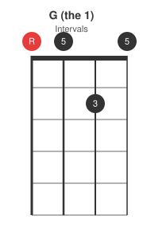
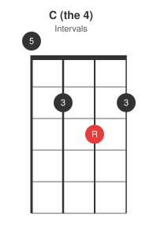
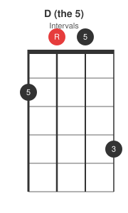
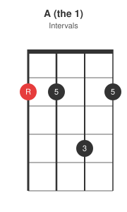
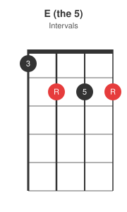
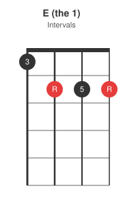
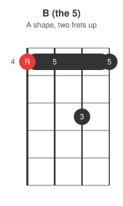
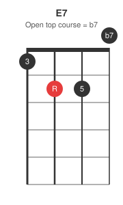

Same series, different instrument again: the 12-bar blues (the form, guitar barre chords) converted to Irish bouzouki. Shapes below are for GDAD tuning, the most common Irish setup; each pair of strings is a unison course, so the diagrams show four strings for four courses. Keys covered: G, A, and E.
The form, unchanged
Twelve bars, three chords, turnaround in bar 12:
1 1 1 1
4 4 1 1
5 4 1 1
Quick change, long 5, and the shuffle feel all carry over from the first post untouched. Only the shapes change -- and on bouzouki, how much of each chord you actually play is a stylistic choice, covered at the end.
Key of G
1-4-5 in G is G, C, D. GDAD is practically built for the key of G -- the 1 chord is two open courses and one finger:



The C voicing keeps the open G course ringing underneath (technically C/G); on a droning instrument that is a feature, not a compromise.
Key of A
1-4-5 in A is A, D, E:


Key of E
1-4-5 in E is E, A, B. The B is the A shape from the key of A slid two frets up -- the same "same shape, two frets" move the guitar barre post uses for every 4-to-5 change:


Drop the 3rd (the fret-6 note) and the barre alone gives 4-4-x-4 style bare fifths -- a B5 that drives just as well. Which leads to the real bouzouki move:
Drones, dyads, and the 7th
Irish bouzouki accompaniment leans modal: two- and three-note shapes, no 3rd, open courses droning. That vocabulary works on a blues too -- the 3rd of each chord is optional when the melody or the singer is supplying the blue notes, and 1-4-5 played as bare fifths with a shuffle drives just as hard as the full chords. Drop the labelled 3 from any diagram above and what remains is the modal version of the same chord.
For the bluesier colour the series keeps returning to, the 7th is one lifted or added finger away here too. The best of them falls out of the tuning for free in the key of E: lower the top course of the E shape to open and the open D course is the b7 --

Play the 12-bar grid in E with that shape as the 1 and the form starts sounding like it grew up on this instrument after all.